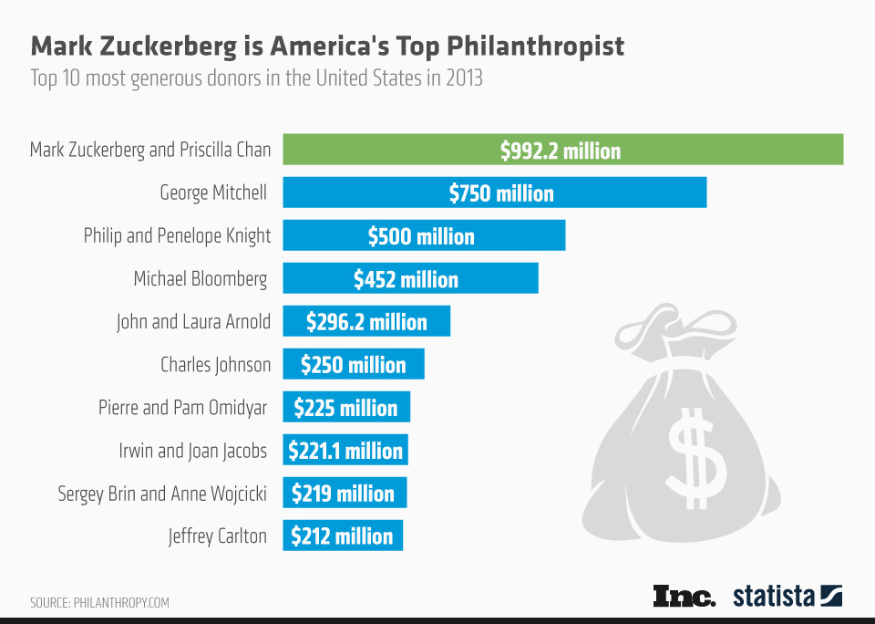

Фінансовий стан
У щорічному списку мільярдерів Америки журналу «Forbes», опублікованому у вересні 2010 року, Марк Цукерберг посів 29-е місце зі статком у $ 6,9 млрд.
У березні 2010 року журнал «Forbes» визнав його наймолодшим мільярдером в своєму списку зі статком $4 млрд.
У рейтингу найбагатших людей США, опублікованому журналом «Forbes» в 2011 році, Цукерберг посів 14-е місце зі статком в 17,5 млрд доларів США.
3 лютого 2016 року зайняв четверте місце у світі у списку найбагатших людей планети. Рівень статків оцінювався в 50 млрд дол, при цьому Марк обігнав Джеффа Безоса (49,1 млрд доларів) і голову Movil SAB Карлоса Сліма (49 млрд доларів), які опустилися на одну сходинку.
Станом на січень 2018 року статки Марка Цукерберга оцінювали в $74 млрд.
У липні 2018 він став третім найбагатшим землянином після Джеффрі Безоса і Білла Гейтса із $81,6 млрд, обійшовши Ворена Бафіта.